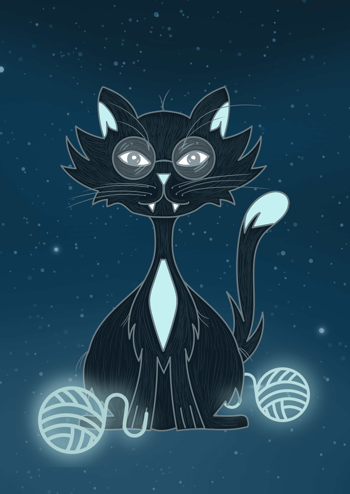

CAMINOS, CAMINOS Y MAS CAMINOS
ME LATEN LAS HISTORIAS

Desenreda estos cuentos o enrédate
en el descubrimiento de todos sus secretos...
Recuerda pon el mouse sobre cada bola de lana

ME LATEN LAS HISTORIAS